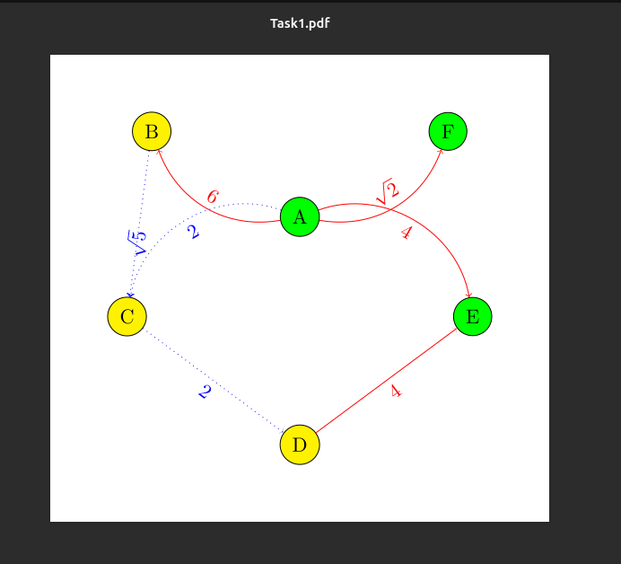
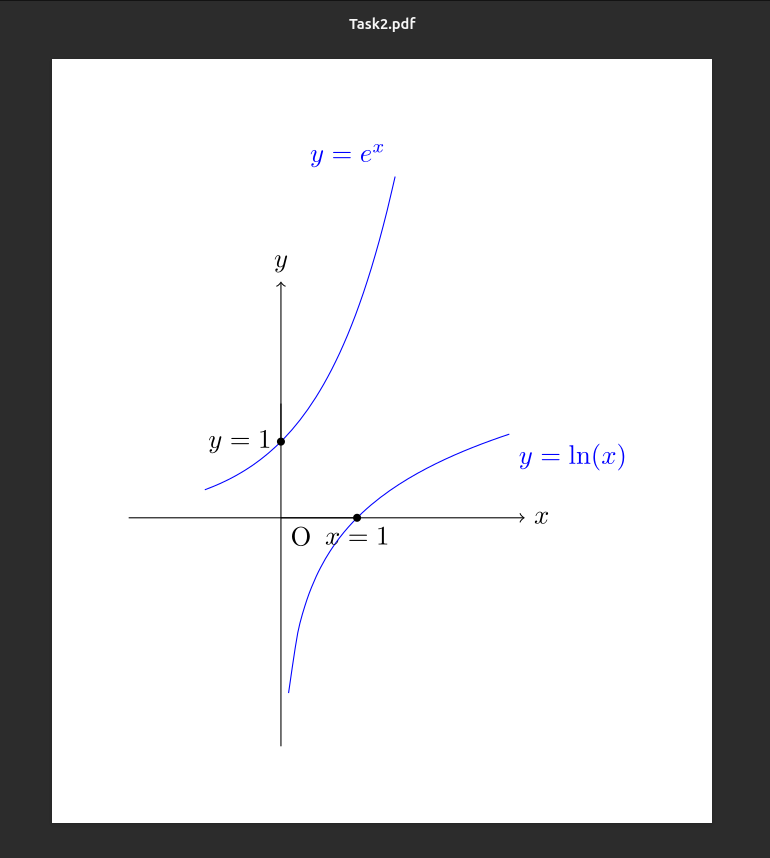
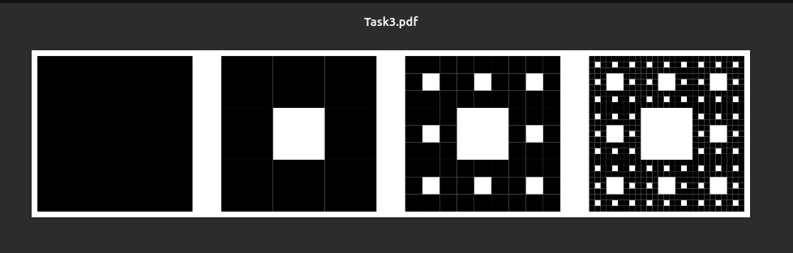
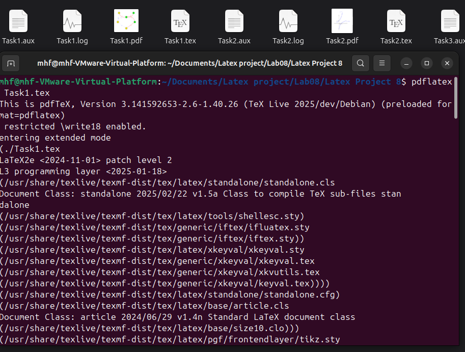
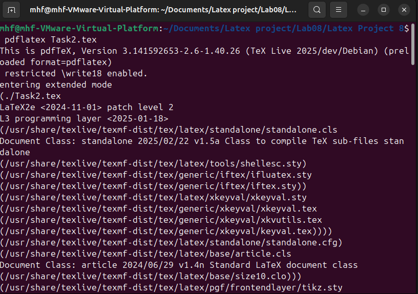
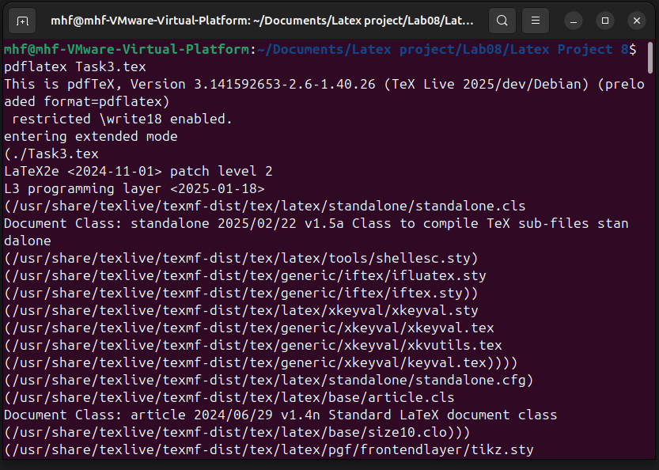

Освоить работу с графикой в LaTeX с использованием пакета TikZ: создание диаграмм, графиков, кривых и фракталов.
TikZ — это инструмент для создания графики в TeX-документах. Это рекурсивная аббревиатура для “TikZ ist kein Zeichenprogramm” (TikZ не является программой для рисования). Графика в TikZ создается с помощью кода, а не рисования в графическом редакторе.
Полезные ресурсы для TikZ: - Wikibooks entry on TikZ: https://en.wikibooks.org/wiki/LaTeX/PGF/TikZ. - CTAN entry on TikZ с официальным руководством: https://www.ctan.org/pkg/pgf. - TeXample TikZ database с примерами: https://texample.net/tikz/.
. Каждая строка кода TikZ заканчивается точкой с запятой.
Линии рисуются с помощью . Координаты могут быть картезианскими (x,y) или полярными (angle:length). Примеры линий: прямые, кривые, Bézier curves.
Узлы — это текст или формы с текстом. Определяются с помощью , могут иметь формы (circle, rectangle) и размещаться на координатах или вдоль путей.
Кривые строятся с помощью plot, с указанием домена и функции, например, y = x^2.
TikZ поддерживает циклы для повторяющихся элементов. Для рекурсивных фигур, как треугольник Sierpiński, используется библиотека math для определения рекурсивных функций.

Рисунок 1: Граф для упражнения 1

Рисунок 2: График для упражнения 2

Рисунок 3: Ковер Sierpiński для упражнения 3



Рисунок 4: Логи компиляции
В ходе лабораторной работы №8 были освоены следующие навыки:
Освоение TikZ в LaTeX важно для создания профессиональной графики в научных документах, позволяя генерировать сложные изображения программно.